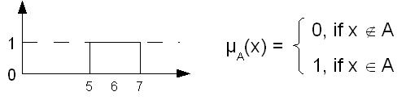
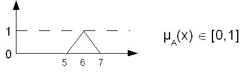
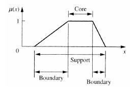

Torna alla pagina di Sistemi Intelligenti
:: Sistemi Intelligenti - Appunti del 10 e 11 Novembre ::
Fuzzy logic
Se ci chiedono che tempo fa, di solito rispondiamo che c'è sole, fa caldo, piove, fa freddo. Difficilmente risponderemo che il valore di irradianza solare è pari a 1,66 Watteff/m2, che la temperatura è di 24°C o che l'umidità è del 78% (se rispondete così avete dei problemi). L'espressione "quest'aula è calda" è quindi qualcosa di soggettivo, espresso con un aggettivo che difficilmente può essere quantificato in modo univoco con dei valori numerici.
Scopo della logica fuzzy è assecondare questa tendenza dell'uomo di non esprimersi sempre in modo preciso (crisp), ma riuscire a gestire processi ed elaborazioni logiche in cui è ammesso un certo livello di vaghezza (fuzzy). Va inoltre tenuto conto che molte situazioni hanno un grado di imprecisione intrinseca nella definizione delle loro caratteristiche, e perdere tempo ed energie per trattarle secondo la logica tradizionale è spesso improbo. L'alternativa è catturare questa vaghezza e avere gli strumenti per trattarla con le stesse (o simili) manipolazioni offerte dalle altre logiche.
Stando a quanto detto, la logica fuzzy può essere considerata una generalizzazione di quella classica booleana.
Esempio
Il problema da risolvere è definire se un uomo è alto. Consideriamo alta una persona tra i 5 e i 7 piedi (da circa 150 cm a circa 213).
Approccio crisp
Associamo ad ogni uomo l'appartenenza (membership) o meno all'insieme "alto" se la sua altezza è compresa tra i 5 e i 7 piedi, estremi inclusi. Se soddisfano questo requisito il loro valore di membership è 1, altrimenti vale 0.
Possiamo quindi dire che l'"appartenenza dell'elemento di un universo a un dato insieme" viene verificata andando a vedere il valore della caratteristica in funzione
della quale sto misurando l'appartenenza.

Approccio fuzzy
Non ci interessa se uno è un po' più alto o un po' più basso di un certo valore di altezza (ad esempio 6). La vaghezza è ammessa perché nell'intorno del valore non è necessaria rigidezza di appartenenza, ma è consentita una certa sfumatura. In questo caso la funzione di membership non descrive più un gradino, ma ha quest'aspetto:

Notiamo che l'inclinazione cattura la vaghezza.
E ora?
A che ci serve tutto questo? A rendere più semplice a livello linguistico la descrizione di sistemi complessi in cui non è banale definire tutti gli aspetti/caratteristiche con valori matematici o comunque crisp. Ricordiamo infatti che in alcuni casi è quasi impossibile generare modelli matematici del sistema, o collezionare sufficienti esempi da sottoporre a una rete neurale. O ancora, magari è anche possibile realizzare una caratterizzazione precisa del sistema da un punto di vista astratto, ma dato che poi è prevista un'interazione umana col software dovrò fare in modo che sia tollerata una certa vaghezza.
La fuzzy logic è utilizzata per moltissime applicazioni, anche molto diverse tra loro. Scaricatevi questa slide (pdf), e guardate da pagina 4.
Concetti base della logica fuzzy
Un insieme fuzzy è un insieme con i confini sfumati, non netti; in altre parole l'elemento di un insieme fuzzy può appartenere anche parzialmente ad esso. Le funzioni di membership permettono di mappare l'appartenenza degli oggetti nei vari insiemi.
Definizione formale: definiamo insieme universo un insieme X non vuoto. Un insieme fuzzy sottoinsieme di tale universo è caratterizzato dalla funzione di membership:
μA: X -> [0,1]
, dove μA è il grado di appartenenza di x all'insieme A. Se μA(x) è maggiore di 0 e minore o uguale a 1, allora x appartiene ad A; se invece μA(x)=0 allora x non gli appartiene.
Considerando solo gli estremi dell'intervallo precedente, quindi 0 e 1, otteniamo un sottoinsieme molto piccolo che corrisponde alla funzione di membership di un sistema booleano classico. Ecco un'ulteriore dimostrazione che la logica booleana è un caso particolare di quella fuzzy, che la generalizza. Questo concetto è molto utile, poichè in alcuni casi specifici ciò che possiamo dedurre da applicazioni della logica fuzzy possiamo dedurli anche dalla (o per la) logica classica.
Un altra definizione ancora più formale di un insieme fuzzy è: l'insieme fuzzy A può essere rappresentanto come l'insieme delle coppie ordinate:
A = {(x,μA(x))|x Є X}
ovvero "gli elementi che appartengono al nostro insieme tali per cui la funzione di membership è maggiore di 0"
Le immagini che seguono sono prese dal pdf "Basic concept" del Dr. Edward Sazonov (scarica)
Quella che segue è la rappresentazione di un possibile insieme fuzzy:

Distinguiamo le varie zone:
- core, rappresenta il sottoinsieme crisp del mio insieme fuzzy, in cui la funzione di membership vale 1
- boundary, la zona di confine, in cui la funzione di membership restituisce valori compresi tra 0 e 1
- support, è l'insieme di tutti i valori della grandezza che stiamo osservando e che hanno funzione di membership maggiore di 0
L' altezza di un insieme fuzzy è il valore massimo della funzione di membership. Un insieme A è chiamato normale se ha altezza 1, e subnormale se ha altezza inferiore di 1.
..to be continued
Torna alla pagina di Sistemi Intelligenti